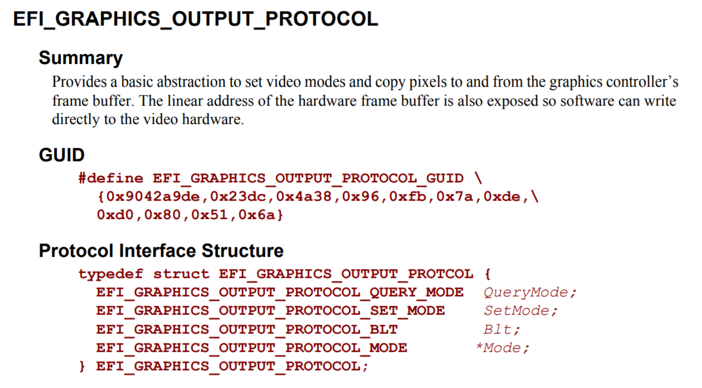

图形输出协议(GOP)
绘制图形要用到的是图形输出协议（Graphics Output Protocol）EFI_GRAPHICS_OUTPUT_PROTOCOL（标准文档"11.9 Graphics Output Protocol(P.464)"），简称GOP。但是，这个协议并不是系统表中的成员。
事实上，大部分的协议需要使用SystemTable->BootServices中的函数来获得它的入口地址（标准文档"4.4 EFI Boot Services Table(P.80)"）。之前我们提到过，BootServices是一个EFI_BOOT_SERVICES类型的结构体，它包括一系列的函数（服务），这些函数主要用于实现引导加载程序(Bootloader)。1
对于大部分不在系统表中的协议，可以通过SystemTable->BootServices->LocateProtocol函数（标准文档"6.3 Protocol Handler Services(P.184)"）来获取它的入口地址。LocateProtocol函数通过每个协议唯一的GUID来定位它们，而各个协议对应的GUID在标准文档中被定义。例如，图4.1中的GUID就是我们这里要用到的EFI_GRAPHICS_OUTPUT_PROTOCOL的GUID。

图4.1: EFI_GRAPHICS_OUTPUT_PROTOCOL的定义
LocateProtocol的定义如代码4.1所示。
unsigned long long (*LocateProtocol)(
struct EFI_GUID *Protocol,
void *Registration,
void **Interface);
代码4.1: LocateProtocol的定义
其参数含义如下：
struct EFI_GUID *Protocol: 所需获取的协议的GUIDvoid *Registration: 可选项。某个协议接口实例的注册键（Registration key），来自BootServices->RegisterProtocolNotify。本书不使用。2void **Interface: 指向返回的协议的指针。
和SystemTable一样，这里我们使用一个全局变量GOP来存放EFI_GRAPHICS_OUTPUT_PROTOCOL，并且在efi_init函数中初始化这个全局变量。加入了GOP支持的efi_init函数如代码4.2所示。
void efi_init(struct EFI_SYSTEM_TABLE *SystemTable)
{
struct EFI_GUID gop_guid = {0x9042a9de, 0x23dc, 0x4a38, \
{0x96, 0xfb, 0x7a, 0xde, \
0xd0, 0x80, 0x51, 0x6a}};
ST = SystemTable;
ST->BootServices->SetWatchdogTimer(0, 0, 0, NULL);
ST->BootServices->LocateProtocol(&gop_guid, NULL, (void **)&GOP);
}
代码4.2: sample3_1_draw_rect/efi.c
现在我们得到了GOP的入口地址，在调用它之前，我们还需要添加GOP的定义（标准文档"11.9 Graphics Output Protocol(P.466)"），如代码4.3所示。注意，在这个例子中我们只添加了我们在本书中要用到的成员的定义，对于完整的定义，参见标准文档。
struct EFI_GRAPHICS_OUTPUT_PROTOCOL {
unsigned long long _buf[3];
struct EFI_GRAPHICS_OUTPUT_PROTOCOL_MODE {
unsigned int MaxMode;
unsigned int Mode;
struct EFI_GRAPHICS_OUTPUT_MODE_INFORMATION {
unsigned int Version;
unsigned int HorizontalResolution;
unsigned int VerticalResolution;
enum EFI_GRAPHICS_PIXEL_FORMAT {
PixelRedGreenBlueReserved8BitPerColor,
PixelBlueGreenRedReserved8BitPerColor,
PixelBitMask,
PixelBltOnly,
PixelFormatMax
} PixelFormat;
} *Info;
unsigned long long SizeOfInfo;
unsigned long long FrameBufferBase;
} *Mode;
};
代码4.3: EFI_GRAPHICS_OUTPUT_PROTOCOL的定义
绘制图形是通过向帧缓冲区写入像素数据来实现的。变量GOP->Mode->FrameBufferBase定义了帧缓冲区的起始地址。像素的格式则可以通过变量GOP->Mode->Info->PixelFormat得到，PixelFormat是一个EFI_GRAPHICS_PIXEL_FORMAT类型的枚举成员。
代码4.4展示了枚举EFI_GRAPHICS_PIXEL_FORMAT的定义。在作者的开发环境（ThinkPad E450和QEMU/OVMF）下，像素格式为PixelBlueGreenRedReserved8BitPerColor。因此，本书的代码是基于"BGR+Reserved各8位"的情况下的。如果您的像素格式不同，请对代码进行适当的修改之后再运行。
enum EFI_GRAPHICS_PIXEL_FORMAT {
PixelRedGreenBlueReserved8BitPerColor,
PixelBlueGreenRedReserved8BitPerColor,
PixelBitMask,
PixelBltOnly,
PixelFormatMax
};
代码4.4: EFI_GRAPHICS_PIXEL_FORMAT的定义
要检查GOP->Mode->Info->PixelFormat的值，我们需要向屏幕中输出数值的函数（回忆一下，OutputString只能输出字符串）。在下一章的例子(目录sample4_1_get_pointer_state)中，common.c新增加了输出16进制数的函数puth，您可以参考它的实现。3
此外，结构体EFI_GRAPHICS_OUTPUT_BLT_PIXEL定义了像素在帧缓冲区中的格式，如代码4.5所示。（标准文档"11.9 Graphics Output Protocol(P.474)"）
struct EFI_GRAPHICS_OUTPUT_BLT_PIXEL {
unsigned char Blue;
unsigned char Green;
unsigned char Red;
unsigned char Reserved;
};
代码4.5: EFI_GRAPHICS_OUTPUT_BLT_PIXEL的定义
至此，我们添加了在屏幕上绘制图形所需要的定义。
形如~_SERVICES的还有一个EFI_RUNTIME_SERVICES，同样也位于系统表中，可以通过SystemTable->RuntimeServices来使用它
译者注：作者原文为“可选项。似乎是根据需要指定的注册键。本书不使用。”，此处为译者的理解
译者注：事实上，要判定是何种像素格式，可以完全不需要输出数值，使用if-else或是switch-case语句即可